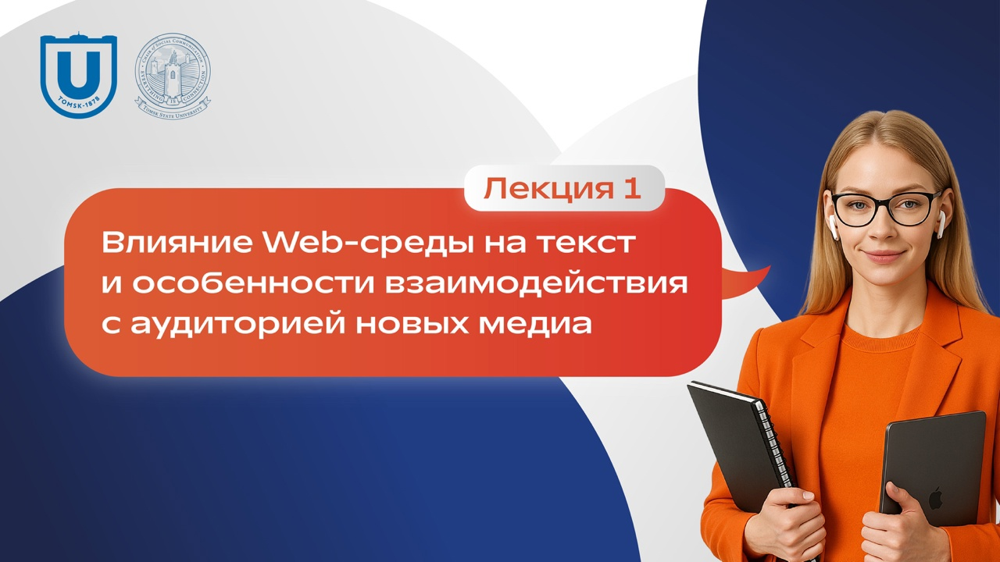

Лекция 1: Влияние Web-среды на текст и особенности взаимодействия с аудиторией новых медиа
В данной лекции рассматриваются ключевые аспекты влияния цифровой среды на создание и восприятие текстового контента. Вы узнаете:
- Как текст стал не просто информацией, а элементом интерфейса и инструментом взаимодействия с аудиторией.
- Особенности поведения сетевых читателей и способы адаптации контента под их потребности.
- Принципы персонального таргетинга и коллаборативного создания контента для повышения эффективности коммуникаций.
- Роль пользовательского контента (UGC) в современных медиа и его влияние на доверие, вовлеченность и восприятие бренда.
Лекция будет полезна магистрантам, специалистам в области рекламы, PR и маркетинга, а также всем, кто интересуется особенностями работы с текстами в цифровой среде.
Что вы найдете в материале:
- Анализ особенностей текста для новых медиа: краткость, информативность, оптимизация для поисковых систем.
- Практические рекомендации по созданию контента, который привлекает внимание и удерживает интерес аудитории.
- Примеры использования гиперссылок, интерактивных элементов и коллаборативных форматов.
- Обзор этических проблем в интернет-рекламе, таких как спам, клоакинг и дорвеи.